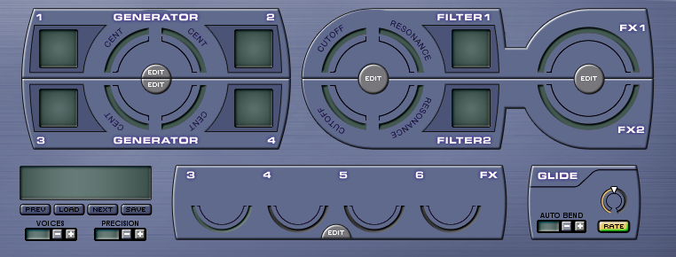
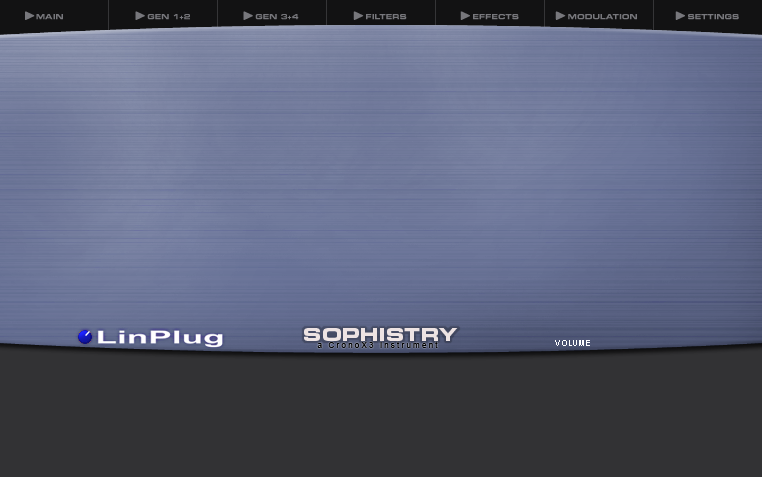

Images extraites de l’original fourni. Cette page permet de consulter les panneaux et les sprites ; elle ne pilote aucun moteur audio.
Les fonds ne contiennent pas tous les contrôles : les boutons, molettes, menus et valeurs étaient composés dynamiquement par VSTGUI/Carbon.
Planche des panneaux · Appels de construction des paramètres
